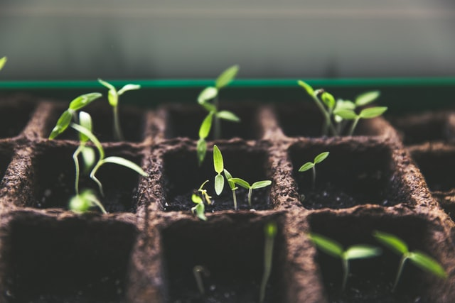
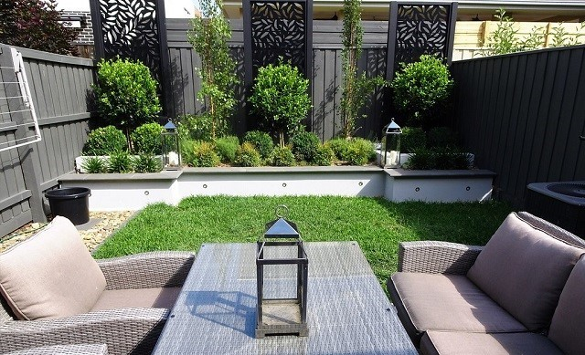
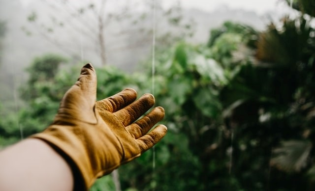

Jesteśmy firmą, która z pasją i zaangażowaniem zajmuje się kompleksowymi usługami ogrodniczymi. Współpracujemy z klientami indywidualnymi i firmami. Aranżujemy i pielęgnujemy tereny prywatne oraz przestrzenie miejskie (skwery, ogródki przy blokach i kamienicach, etc.).
W naszej pracy wykorzystujemy najwyższej jakości rośliny oraz naturalne surowce, które wykorzystujemy do aranżacji terenu. Dysponujemy własnym sprzętem ogrodniczym. W ten sposób możemy obniżyć koszty realizacji usługi.
Przeprowadzamy profesjonalne prace z zakresu przygotowania, pełnego wykonania projektów, a także pielęgnacji oraz przebudowy nowych, a także już istniejących przestrzeni zielonych. Wykonujemy także prace brukarskie bazując na materiałach budulcowych pochodzących wprost z natury.

Nie prowadzimy selekcji zleceń, przez co służymy naszymi poradami i usługami nawet w drobnych sprawach ogrodniczych, wykonując przy tym odpowiednio dopasowany kosztorys.
Do każdego terenu stosujemy indywidualne podejście, zgodne z oczekiwaniami naszych klientów, a także uwzględniające odpowiednie wyczucie estetyki danej przestrzeni.

Naszym celem jest tworzenie miejsc, w których człowiek może odpocząć z rodziną, cieszyć się naturą i doznawać wysokich przeżyć estetycznych.

W pracy stawiamy na solidność, terminowość, elastyczność podczas omawiania i realizacji projektów, a także dobrą komunikację z klientem. Cenimy możliwość długofalowej współpracy, pozwalającej na ekspercką opiekę nad danym terenem.
Masz pytania?
Kontakt:
Ogrodyhomester.pl
Jawornik 271, 32-400 Jawornik
+48 507 610 292
kontakt@ogrodyhomester.pl
Godziny pracy:
poniedziałek-piątek w godzinach 8:00-16:00